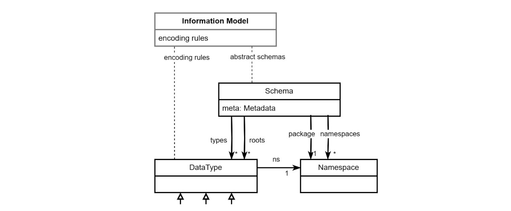
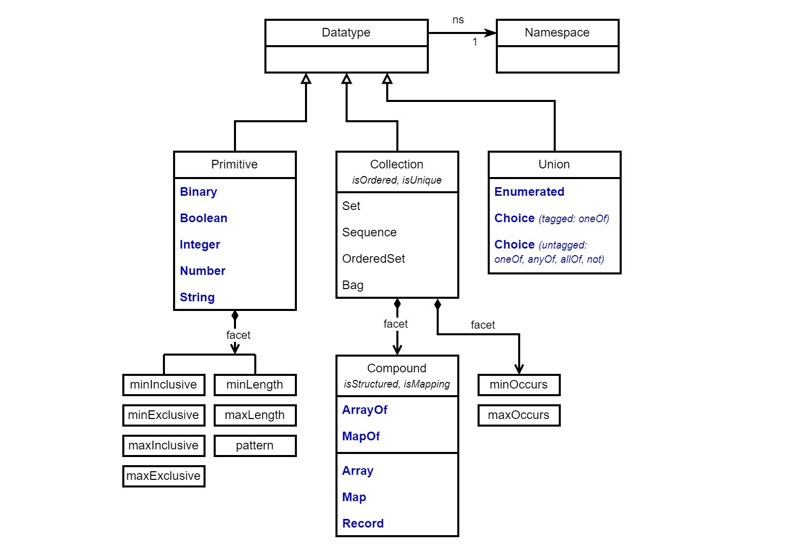
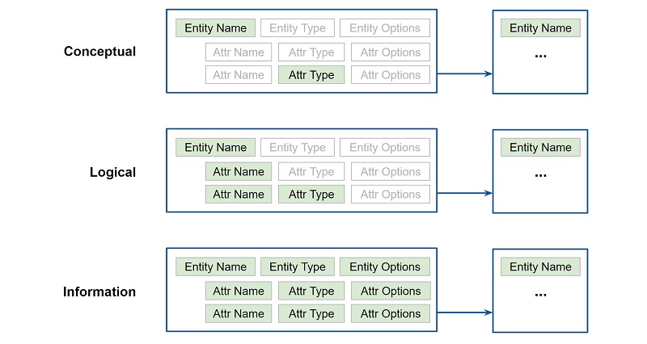
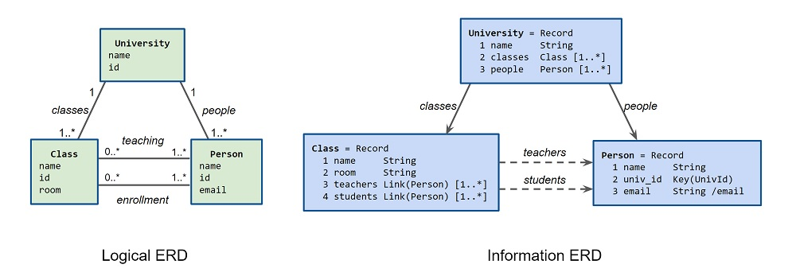

https://docs.oasis-open.org/openc2/jadn/v2.0/csd01/jadn-v2.0-csd01.md
(Authoritative)
https://docs.oasis-open.org/openc2/jadn/v2.0/csd01/jadn-v2.0-csd01.html
https://docs.oasis-open.org/openc2/jadn/v2.0/csd01/jadn-v2.0-csd01.pdf
https://docs.oasis-open.org/openc2/jadn/v1.0/jadn-v1.0.md
(Authoritative)
https://docs.oasis-open.org/openc2/jadn/v1.0/jadn-v1.0.html
https://docs.oasis-open.org/openc2/jadn/v1.0/jadn-v1.0.pdf
https://docs.oasis-open.org/openc2/jadn/v2.0/jadn-v2.0.md
(Authoritative)
https://docs.oasis-open.org/openc2/jadn/v2.0/jadn-v2.0.html
https://docs.oasis-open.org/openc2/jadn/v2.0/jadn-v2.0.pdf
OASIS Open Command and Control (OpenC2) TC
Duncan Sparrell (duncan@sfractal.com), sFractal Consulting LLC
Michael Rosa (mjrosa@nsa.gov), National Security Agency
David Kemp (d.kemp@cyber.nsa.gov), National Security Agency
This prose specification is one component of a Work Product that also includes:
An Information Model (IM) defines the meaning and essential content of data used in computing independently of how it is represented for processing, communication or storage. JSON Abstract Data Notation (JADN) is an information modeling language based on Unified Modeling Language (UML) logical DataTypes, used to both express the meaning of data items at a conceptual level and formally define and validate instances of those types. JADN uses information theory to define logical equivalence, which enables representation of essential content in a wide range of formats and ensures translation among representations without loss. This document defines the normative DataTypes and data formats used to construct a JADN IM, and describes several equivalent non-normative model representations including a textual information definition language, a table format, and a diagram format. Because a JADN IM is a logical value, it can also be serialized in the same formats as the data it describes, allowing the model to accompany the data if desired and facilitating dynamic model updates.
This document was last revised or approved by the OASIS Open Command and Control (OpenC2) TC on the above date. The level of approval is also listed above. Check the "Latest stage" location noted above for possible later revisions of this document. Any other numbered Versions and other technical work produced by the Technical Committee (TC) are listed at https://www.oasis-open.org/committees/tc_home.php?wg_abbrev=openc2#technical.
TC members should send comments on this specification to the TC's email list. Others should send comments to the TC's public comment list, after subscribing to it by following the instructions at the "Send A Comment" button on the TC's web page at https://www.oasis-open.org/committees/openc2/.
This specification is provided under the Non-Assertion Mode of the OASIS IPR Policy, the mode chosen when the Technical Committee was established. For information on whether any patents have been disclosed that may be essential to implementing this specification, and any offers of patent licensing terms, please refer to the Intellectual Property Rights section of the TC's web page (https://www.oasis-open.org/committees/openc2/ipr.php).
Note that any machine-readable content (Computer Language Definitions) declared Normative for this Work Product is provided in separate plain text files. In the event of a discrepancy between any such plain text file and display content in the Work Product's prose narrative document(s), the content in the separate plain text file prevails.
The key words "MUST", "MUST NOT", "REQUIRED", "SHALL", "SHALL NOT", "SHOULD", "SHOULD NOT", "RECOMMENDED", "NOT RECOMMENDED", "MAY", and "OPTIONAL" in this document are to be interpreted as described in BCP 14 [RFC 2119] and [RFC 8174] when, and only when, they appear in all capitals, as shown here.
When referencing this specification the following citation format should be used:
[JADN-v2.0]
JSON Abstract Data Notation Version 2.0. Edited by David Kemp.
19 February 2025. OASIS Committee Specification Draft 01. https://docs.oasis-open.org/openc2/jadn/v2.0/csd01/jadn-v2.0-csd01.html.
Latest version: https://docs.oasis-open.org/openc2/jadn/v2.0/jadn-v2.0.html.
Copyright © OASIS Open 2025. All Rights Reserved.
Distributed under the terms of the OASIS IPR Policy.
The name "OASIS" is a trademark of OASIS, the owner and developer of this specification, and should be used only to refer to the organization and its official outputs.
For complete copyright information please see the Notices section in the Appendix.
An information model is a representation of concepts, relationships, constraints, rules, and operations to specify data semantics for a chosen domain of discourse. An information modeling language is a formal syntax that allows users to capture data semantics and constraints.
-- [Information Modeling], Y. Tina Lee, NIST
This is the reference specification for the JADN information modeling language. See [JADN-CN] for additional detail on the information modeling process and how to construct and use JADN information models. While the term information modeling is used broadly and covers a range of applications, a JADN information model defines the essential content of discrete data items used in computing independently of how that content is represented for processing, communication or storage.
An information model defines the question "What does the recipient know after receiving a data item" separately from "what does a data item look like".
The objective of UML is to provide system architects, software engineers, and software developers with tools for analysis, design, and implementation of software-based systems as well as for modeling business and similar processes.
-- [Unified Modeling Language (UML)]
JADN is a UML profile for documents and messages. UML's organizing principle is classification, where a classifier represents a classification of instances according to their features. The values that are classified by a classifier are called instances of the classifier. UML defines several kinds of classifier including DataType and Class. Instances of a DataType are identified by their value, and all instances of a DataType with the same value are considered to be equal instances. DataType instances are immutable because by definition a different value is a different instance. A value may be classified as an instance of multiple DataTypes, but value comparison is meaningful only among instances of the same type.
Instances of a Class are objects that model operations and behavior. An object does not have an immutable value: its state can change over time and two objects instantiated from the same Class, even with identical property values, are different instances. Although objects are not values, DataTypes model object features that are values, such as documents and messages in business processes and public fields and API (getter/setter) views of private state in software-based systems. Additional differences between DataType and Class include:
The Resource Description Framework [RDF] includes DataTypes:
RDF defines an abstract syntax (a data model) which serves to link all RDF-based languages and specifications. RDF graphs are sets of subject-predicate-object triples, where the elements may be IRIs, blank nodes, or datatyped literals. They are used to express descriptions of resources.
RDF defines DataType as having a "lexical-to-value (L2V) mapping", and while an RDF graph defines relationships among physical and data resources, DataType is the only RDF element that defines a data resource in terms of both a literal representation and its representation-independent logical value.
Defining equivalence across representations is the primary distinction between information modeling and other data modeling approaches. An information model is constructed from DataTypes, not Classes, because its purpose is to compare literal values for equivalence based on their logical information content, and only DataTypes have instances that can be validated for content integrity and compared for equality.
Information (essential content): Informally, essential means that if data can be removed from a message without affecting its meaning, then it is not essential. Formally, information theory quantifies the entropy (novelty, or news value) of a message in bits, excluding data that is insignificant or is redundant with what is known a priori. The information content of a message can be no greater than the smallest data value that accurately represents it.
Information Model: An abstract schema that defines the meaning, structure and value constraints of information used in computing systems independently of representation, plus a set of application-independent mappings between external data values and internal logical values.
Equivalence: The relation between the meaning represented by two data values such that each logically implies the other. Two data values are equivalent if and only if they are classified as instances of the same DataType and have the same logical value.
DataType (logical type, type): An abstract type that defines the meaning and essential content of a discrete data item used in computing independently of how it is represented for processing, communication or storage. DataTypes are defined by and composed using an information modeling language. Every DataType has a value space as defined in XSD Part 2 Section 2.1 and a lexical space defined by a specified data format.
Logical Value (information value): An immutable instance of a DataType used for processing and comparison, specified by behavioral effect independently of programming languages and techniques. Every logical value is a member of the value space of its DataType.
Data Value (document, message, artifact, lexical value, literal value): An immutable instance of a DataType used for transmission or storage, consisting of a sequence of octets or characters in an external data format. Every lexical value is a member of a lexical space of its DataType.
Data Format: Serialization rules that specify the media type (e.g., XML, JSON, CBOR, Protobuf), design goals (human readability, efficiency), and style preferences for data values in that format. A data format defines a lexical space and a lexical mapping for each DataType.
Data Model: A concrete schema that defines the structure and value constraints of serialized data. A single information model corresponds to multiple equivalent data models; data models are equivalent if they define data values representing the same information.
Presentation Format: A view of logical values that does not necessarily preserve all essential content, used for display or documentation purposes.
Well-formed: A data value that is valid according to a structured syntax [RFC 7303] (e.g., "+json", "+der"), if one is specified by the data format.
Valid: A logical value is valid if it satisfies the constraints of its DataType. A data value is valid if it is well-formed and is classified as an instance of a DataType.
Serialization: Serialization, or encoding, converts a logical value into a data value. De-serialization, or decoding, classifies a data value and converts it into an instance of a DataType.
Description (annotation): Description fields of an information model are reserved for comments from authors to readers or maintainers of the model and are ignored by information processing applications.
A JADN information model defines the essential content of discrete data items used in computing independently of how that content is represented for processing, communication or storage. Information values are instances of abstract UML DataTypes, and as shown in Figure 2-1 DataType definitions are organized into abstract schema packages which are included in an application's information model.

Section 3 defines schema packages
and metadata.
Section 4 defines the JADN core types.
Section 5 defines shortcuts that make type
definitions more convenient without affecting meaning.
Section 6 discusses
using encoding rules to define concrete data formats.
Section 7 describes
non-normative alternate JADN schema formats:
The normative format of a Schema package, as defined in Sections 3 and 4, is JSON data that can be validated by a schema, but a package can also be represented unambiguously in other formats more suited to human understanding. This specification uses JSON to precisely define the structure of a JADN schema, but uses the IDL format described in Section 7 where understanding purpose and meaning is the primary goal. These representations are equivalent, but if there is a conflict the JSON definition has precedence.
Packages provide the main structuring and organizing capability of
UML. A UML package is a namespace for its members, and a JADN abstract
schema is composed using packages. All packages, including the one
defining JADN itself, are instances of JADN's Schema type.
Schema has two fields: package metadata defined in this section (Figure 3-1), and a list
of type definitions defined in Section
4.
title: "JADN Metaschema"
package: "http://oasis-open.org/openc2/jadn/v2.0/schema"
description: "Syntax of a JSON Abstract Data Notation (JADN) package."
license: "CC-BY-4.0"
roots: ["Schema"]
config: {"$FieldName": "^[$A-Za-z][_A-Za-z0-9]{0,63}$"}
Schema = Record // Definition of a JADN package
1 meta Metadata optional // Information about this package
2 types Type unique [1..*] // Types defined in this package
Metadata = Map // Information about this package
1 package Namespace // Unique name/version of this package
2 version String{1..*} optional // Incrementing version within package
3 title String{1..*} optional // Title
4 description String{1..*} optional // Description
5 comment String{1..*} optional // Comment
6 copyright String{1..*} optional // Copyright notice
7 license String{1..*} optional // SPDX licenseId of this package
8 namespaces PrefixNs unique [0..*] // Referenced packages
9 roots TypeName unique [0..*] // Roots of the type tree(s) in this package
10 config Config optional // Configuration variables
11 jadn_version Namespace optional // JADN Metaschema package
PrefixNs = Array // Prefix corresponding to a namespace IRI
1 NSID // prefix:: Namespace prefix string
2 Namespace // namespace:: Namespace IRI
Config = Map{1..*} // Config vars override JADN defaults
1 $MaxBinary Integer{1..*} optional // Package max octets, default = 255
2 $MaxString Integer{1..*} optional // Package max characters, default = 255
3 $MaxElements Integer{1..*} optional // Package max items/properties, default = 255
4 $Sys String{1..1} optional // System character for TypeName, default = '.'
5 $TypeName String /regex optional // Default = ^[A-Z][-.A-Za-z0-9]{0,63}$
6 $FieldName String /regex optional // Default = ^[a-z][_A-Za-z0-9]{0,63}$
7 $NSID String /regex optional // Default = ^([A-Za-z][A-Za-z0-9]{0,7})?$
Namespace = String /uri // Unique name of a package
NSID = String{pattern="$NSID"} // Namespace prefix matching $NSID
TypeName = String{pattern="$TypeName"} // Name of a logical type
FieldName = String{pattern="$FieldName"} // Name of a field in a structured type
TypeRef = String // Reference to a type, matching ($NSID ':')? $TypeNameThese Metadata fields provide information about a package but have no effect on schema processing:
These Metadata fields affect schema processing:
package: A namespace [IRI] that unambiguously identifies this Schema instance and allows type definitions in this package to be unambiguously referenced from other packages. This is a unique identifier but not necessarily a resource locator.
version: Incremental revision of this package, a string that compares lexicographically higher than previous revisions. A package namespace uniquely identifies both the topic and published version of a referenced package. This field identifies the latest revision of a package when more than one revision is available.
jadn_version: Package namespace of the JADN version used to validate this package.
namespaces: A set of associations between
Namespace IDs (prefixes) and namespace IRIs. Types defined in this
package may reference types from other packages using
PrefixedName as defined in [XML
Namespaces]. Associating a blank prefix with a package namespace
indicates that its types are treated as if they were defined in this
package. This requires the referenced package to have non-conflicting
type names and compatible metadata including name formats and
namespaces.
roots: List of top-level types defined in this package. This designates a single starting point or a catalog of library types defined in this package, and allows schema processing tools to flag unreferenced type definitions.
config: Configuration variables used to tailor schema processing within a package. Variables not configured in a package have an implementation-defined default value, with recommended defaults shown below.
Name Formats: JADN syntax does not restrict the allowed name formats, but establishing naming conventions using distinct formats for TypeName and FieldName (Section 4.1) can aid schema readability. These variables define a package's naming conventions:
Size Limits: These variables define default maximum sizes for variable-sized Primitive and Compound types (Section 4). Individual type definitions override implementation or package defaults using type options.
maxLength = 255maxLength = 255maxOccurs = 255QName) as
defined in [XML Namespaces] using $NSID
and $TypeName instances as Prefix and
LocalPart respectively.An information modeling language's abstract DataTypes define their meaning and application behavior. As shown in Figure 4-1, JADN defines twelve core types in three categories:

All JADN type definitions have the identical structure, shown in Figure 4-2, designed to be easily describable, easily processed, stable, and extensible.
Type = Array
1 TypeName // type_name::
2 Enumerated(Enum[JADN-Type]) // core_type::
3 Options optional // type_options::
4 Description optional // type_description::
5 JADN-Type(TagId[core_type]) optional // fields::
JADN-Type = Choice
1 Binary Empty
2 Boolean Empty
3 Integer Empty
4 Number Empty
5 String Empty
6 Enumerated Items
7 Choice Fields
8 Array Fields
9 ArrayOf Empty
10 Map Fields
11 MapOf Empty
12 Record Fields
Empty = Array{0}
Items = ArrayOf(Item)
Fields = ArrayOf(Field)
Item = Array
1 FieldID // item_id::
2 String // item_value::
3 Description optional // item_description::
Field = Array
1 FieldID // field_id::
2 FieldName // field_name::
3 TypeRef // field_type::
4 Options optional // field_options::
5 Description optional // field_description::
FieldID = Integer
Options = ArrayOf(Option) unique
Option = String{1..*}
Description = StringEach type definition has five elements:
Defaults:
If CoreType is a Primitive or unstructured Compound type, the Fields array is empty.
JSON Format and Example:
[TypeName, CoreType, [TypeOption, ...], TypeDescription, []]
["Username", "String", ["%^[a-z][a-z0-9]{3,11}$"]]
["Users", "ArrayOf", ["*Username"]]IDL Example:
Username = String{pattern="^[a-z][a-z0-9]{3,11}$"}
Users = ArrayOf(Username)If CoreType is the Enumerated Type, each item definition in the Fields array has three elements:
JSON Format and Example:
[TypeName, CoreType, [TypeOption, ...], TypeDescription, [
[ItemId, ItemValue, ItemDescription],
...
]]
["Color", "Enumerated", [], "", [
[1, "red"],
[2, "green"],
[3, "blue"]
]]IDL Example:
Color = Enumerated
1 red
2 green
3 blueIf CoreType is a structured Compound or Choice type, each field definition in the Fields array has five elements:
JSON Format and Example:
[TypeName, CoreType, [TypeOption, ...], TypeDescription, [
[FieldID, FieldName, FieldType, [FieldOption, TypeOption, ...], FieldDescription],
...
]]
["Coordinate", "Record", [], "A GPS coordinate", [
[1, "latitude", "Latitude", [], "A Number between -90 and 90 degrees"],
[2, "longitude", "Longitude", [], "A Number between -180 and 180 degrees"]
]]IDL Example:
Coordinate = Record // A GPS coordinate
1 latitude Latitude // A Number between -90 and 90 degrees
2 longitude Longitude // A Number between -180 and 180 degreesType and field options are the mechanisms to support a varied set of information needs within the strictly regular type definition structure. New requirements can be accommodated by defining new options without modifying that structure. Each TypeOption and FieldOption provides a limited piece of information about some aspect of the DataType to which it applies, similar in purpose to an [XSD] facet. Each option has an ID and value listed in Section 4.2, and is represented in JSON format as a string where the first character's Unicode codepoint is the option's ID and the remaining characters are its value. Boolean options have no additional characters; if the option ID is present its value is True, otherwise False.
As an example the TypeOption "minLength = 1" is represented as:
+----+-----------+ Option ID = 0x7b (Left Curley Bracket) = "minLength"
| ID | Value | Value = 1 (Integer)
+----+-----------+ TypeOption = "{1" (String)In some cases the character represented by an option ID has a mnemonic relationship to its purpose but this is not true in general; option IDs are non-semantic integer identifiers.
A primitive type has no substructure, and specifies an unrestricted space of atomic values without regard to processing mechanisms or data format. As shown in Figure 4-1 the primitive core types are Binary, Boolean, Integer, Number and String.
Type options specify value restrictions such as size, range, and regular expression patterns. Semantic validation keywords (formats) listed in Section 4.2.4 also define value restrictions on primitive types.
Primitive TypeOptions are listed in Table 4-1:
| ID | Chr | Type | Name | Description |
|---|---|---|---|---|
| 0x25 | % | String | pattern | Instance matches the specified regular expression |
| 0x7b | { | Integer | minLength | Minimum octet or character count |
| 0x7d | } | Integer | maxLength | Maximum octet or character count |
| 0x75 | u | * | default | Instance equals default if no value is given |
| 0x76 | v | * | const | Instance is equal to option value |
| 0x77 | w | * | minInclusive | Instance is greater than or equal to option value |
| 0x78 | x | * | maxInclusive | Instance is less than or equal to option value |
| 0x79 | y | * | minExclusive | Instance is greater than option value |
| 0x7a | z | * | maxExclusive | Instance is less than option value |
* indicates that the option value must evaluate to an
instance of CoreType.
default option specifies a pre-set value to be used
for an optional/nullable variable when no other value is supplied.
null or when no literal
value is present, the logical value is set to the default.null or when no
logical value is present, the classifier uses the default.null as specified by the data
format.const option specifies a pre-set value used as a
classifier, equivalent to setting both minInclusive and
maxInclusive to that value.Note: This specification does not define an expression language
but does not preclude their use. For options with type = *
the result of using a value other than a single terminal element
(literal instance of a Primitive type) is not defined here. In principle
the default and const options apply to
Compound types but cannot be used until a Compound literal format is
defined.
A Boolean instance is one of the predefined values true and false.
Options: const, default
An Integer instance is a value in the ordered infinite set of integers (…, -2, -1, 0, 1, 2, …).
Options: const, default
Range Options: minInclusive, maxInclusive,
minExclusive, maxExclusive
A Number instance is a value in the ordered infinite set of real numbers.
Options: const, default
Range Options: minInclusive, maxInclusive,
minExclusive, maxExclusive
A String instance is a sequence of characters in a character set. Value range options are meaningful if the character set defines a collation order. The pattern, length, and range options are not normally used together, but if more than one kind is present in a type definition an instance must satisfy all conditions.
Options: pattern, const, default
Length Options: minLength, maxLength
Range Options: minInclusive, maxInclusive,
minExclusive, maxExclusive
A Binary instance is sequence of octets. Binary values are not ordered so range options do not apply.
Options: const, default
Length Options: minLength, maxLength
Compound types define a collection of items. As shown in Figure 4-1 a compound type defines how the items in a collection are specified, while the collection itself is a UML "MultiplicityElement" with cardinality bounds and collection properties. The Compound types are:
| Compound Type | Structured | Mapping | Collection Properties |
|---|---|---|---|
| ArrayOf(vtype) | No | No | Ordered, non-Unique (sequence) |
| Array | Yes | No | Ordered, non-Unique (sequence) |
| MapOf(ktype, vtype) | No | Yes | non-Ordered, Unique (set) |
| Map | Yes | Yes | non-Ordered, Unique (set) |
| Record | Yes | Both | non-Ordered, Unique (set) |
By default, ArrayOf and Array specify a sequence of items and MapOf, Map, and Record specify a set of items, but these collection properties can be modified using TypeOptions.
Compound TypeOptions are listed in Table 4-2:
| ID | Chr | Type | Name | Description |
|---|---|---|---|---|
| 0x2a | * | TypeRef | vtype | Value type for ArrayOf and MapOf |
| 0x2b | + | TypeRef | ktype | Key type for MapOf |
| 0x7b | { | Integer | minLength | Minimum number of items in a collection, default is 0 |
| 0x7d | } | Integer | maxLength | Maximum number of items in a collection, default is unlimited |
| 0x3d | = | Boolean | id | Fields are identified by FieldID not FieldName |
| 0x71 | q | Boolean | unique/ordered | isOrdered = true, isUnique = true (ordered set) |
| 0x73 | s | Boolean | set | isOrdered = false, isUnique = true (set) |
| 0x62 | b | Boolean | unordered | isOrdered = false, isUnique = false (bag) |
id option
indicates that fields are always identified by FieldID.
id, FieldName is a defined name that is
included in the semantics of the type, must be populated in the type
definition, and may appear in serialized data depending on serialization
format.id, FieldName is a suggested label that is not
included in the semantics of the type, may be empty in the type
definition, has no effect on validation, and never appears in serialized
data regardless of data format.id option cannot be used with Record; the Array
type is equivalent to Record with id.0x71 (collection is an ordered set) is
referred to as unique when used with the ArrayOf type and
ordered when used with MapOf, Map or Record types.Example: the id option indicates that values use FieldId
instead of FieldName
["Colors", "Enumerated", [], "", [
[1, "red", "The color of roses"],
[2, "green"],
[3, "blue", "Violets"]
]],
["ColorIds", "Enumerated", ["="], "", [
[1, "red", "The color of roses"],
[2, "green"],
[3, "blue", "Violets"]
]]Colors = Enumerated
1 red // The color of roses
2 green
3 blue // Violets
ColorIds = Enumerated#
1 // red:: The color of roses
2 // green::
3 // blue:: VioletsMultiplicity TypeOptions specify the ordering and uniqueness semantics of compound types. This allows collection instances with uniqueness constraints to be validated and instances with the same ordering significance to be compared, independently of their compound type. The ArrayOf compound type can specify the four UML collection types (sequence, set, ordered set, bag). Structured and MapOf compound types are always unique, so they can specify only set or ordered set collections. The non-default collection types are:
| Compound Type | Multiplicity Option | Collection Properties |
|---|---|---|
| ArrayOf | set | Non-Ordered, Unique (set) |
| ArrayOf | unique | Ordered, Unique (ordered set) |
| ArrayOf | unordered | Non-Ordered, Non-Unique (bag) |
| Array | set | Non-Ordered, Unique (set) |
| MapOf | ordered | Ordered, Unique (ordered set) |
| Map | ordered | Ordered, Unique (ordered set) |
| Record | ordered | Ordered, Unique (ordered set) |
The TypeOptions applicable to each compound CoreType are:
| Compound Type | Allowed TypeOptions |
|---|---|
| ArrayOf(vtype) | minLength, maxLength, set, unique, unordered, vtype |
| Array | minLength, maxLength, set |
| MapOf(ktype, vtype) | minLength, maxLength, ordered, ktype, vtype |
| Map | minLength, maxLength, ordered, id |
| Record | minLength, maxLength, ordered |
Structured compound types (Array, Map and Record) and the Choice type have Fields that define each item in a collection individually. Each Field has a numeric ID, Name, TypeReference, and FieldOptions from Table 4-3:
| ID | Chr | Type | Name | Description |
|---|---|---|---|---|
| 0x5b | [ | Integer | minOccurs | min cardinality, default = 1, 0 = field is optional |
| 0x5d | ] | Integer | maxOccurs | max cardinality, default = 1, <0 = inherited or none |
| 0x4b | K | Boolean | key | field is the primary key for this type |
| 0x4c | L | Boolean | link | field is a link (foreign key) to an instance of FieldType |
The minOccurs and maxOccurs options specify the minimum and maximum number of instances (the multiplicity) of a field within a collection:
| minOccurs | maxOccurs | Multiplicity | Description |
|---|---|---|---|
| 1 | 1 | 1 | One instance (required) - default |
| 0 | 1 | 0..1 | Zero or one instances (optional) |
| 0 | 0 | 0 | Zero instances (prohibited) |
| 0 | < 0 | 0..* | Zero or more instances |
| 1 | < 0 | 1..* | One or more instance |
| m | n | m..n | At least m but no more than n instances |
An information model defines type relationships in two ways: as collections containing values or as references to values. Collection relationships are normally hierarchical: a root compound type such as book contains chapters, which contain sentences, which contain leaf types such as words. A hierarchy is a directed acyclic graph (DAG), meaning that its types have no circular dependencies and its values have no indefinitely-deep recursive nesting. When collection types have cyclic relationships either directly or indirectly through other types, the cycles should be broken by replacing a contained value with a reference to eliminate recursive nesting.
The key and link TypeOptions support type
references:
key option designates one field of a structured
compound type as its primary key. Although the key field is normally a
primitive type, it may be defined as a compound type to support
composite keys.link option designates a field as a foreign key
that references an instance of the specified type, flattening collection
values and supporting relationship-aware application operations such as
checking referential integrity.As an example, an instance of a Person type with cyclic relationships
would contain denormalized (duplicated) nested values. Using
link references to eliminate contained value cycles results
in a flat set of independent, normalized values:
Person = Record
1 id Key(Integer)
2 name String
3 mother Link(Person)
4 father Link(Person)
5 siblings Link(Person) [0..*]
6 employer Link(Organization) optional
Organization = Record
1 name String
2 ein Key(String{10..10})
3 ceo Link(Person)Example composite key:
LineItem = Record
1 item_id Key(ItemId) // Composite unique identifier for a line item
2 quantity Integer // Other information about the ordered item
ItemId = Array
1 Integer // order_id:: Order unique identifier
2 Integer // product_id:: Product unique identifiervtype option.ktype
and vtype options.vtype.ktype.key field. The key field MAY be a compound type.link option MUST be instances
of the referenced type.link option MUST equal
the value of the key field of the referenced type.A union type specifies a set of alternatives used to classify a value. Like Compound types, some Union types have fields individually identified by tag, where the tag consists of an integer FieldID and a string FieldName, each of which is local to and unique within the type definition. Union types define a set of tags, types or both:
| Type | Tag | Type | Definition |
|---|---|---|---|
| Enumerated | Yes | - | Vocabulary, a set of tags. |
| Choice | Yes | Yes | Tagged union, a set of tag:type pairs. |
| Choice(Cx) | - | Yes | Untagged union, a specified logical combination of types. |
The TypeOptions applicable to Union types are:
| ID | Chr | Type | Name | Description |
|---|---|---|---|---|
| 0x3d | = | Boolean | id | If present Tag is an integer FieldID, otherwise a string FieldName |
| 0x43 | C | String | combine | Option value is a character specifying the untagged union combining function |
An Enumerated type defines a vocabulary, an explicitly listed set of
item_id:item_value pairs. Enumerated is
described as "a degenerate tagged union of unit type" [ENUM] because it defines the tags of a tagged union
without any associated type, and an instance equals one of the defined
tags. The id option specifies that an instance is an
integer matching an item_id, otherwise it is a string
matching the corresponding item_value.
The enum (Section 5.3) and pointer (Section 5.5) shortcuts create an Enumerated type containing the tags from a referenced structured type.
The Choice type without a combine TypeOption is a tagged union, a structure that defines a set of tag:type pairs. Values include a tag specifying a single FieldType from the set, and an instance is a value that matches the FieldType specified by the tag.
Within a Choice type minOccurs values of 0 and 1 are equivalent because all fields are inherently optional and exactly one (specified by the tag) must be present.
The Choice type containing a combine TypeOption is an untagged union, a structure that defines a set of types used collectively to classify a value.
The combine option value is a single character that specifies the required combination of FieldTypes:
allOf the typesanyOf the types, tried
in field order until a match is foundoneOf the types and no
othersField order does not matter for the allOf and
oneOf options because values must always be evaluated
against all FieldTypes.
Field order is significant when using the anyOf option
and the FieldTypes are not disjoint because this performs both
classification and validation. A value may be an instance of more than
one classifier, and classification may be used to answer two
questions:
In this example the value "Home" is an instance of both the predefined and custom types and could be classified as either one. If any processing operations depend on the classification decision, the predefined type must appear first in the Choice otherwise it will never match and all values will be tagged, serialized, and processed as instances of the custom type:
PhoneType = Choice(anyOf)
1 predefined PhoneNumberTypes // Pre-defined names
2 custom String{3..10} // Any name 3-10 characters in length
PhoneNumberTypes = Enumerated
1 Home
2 Cell
3 OfficeAn untagged Choice with a single field can be used to define an alias for FieldType. The combine option has no effect when there is only one field.
The FieldOptions applicable to Union types are:
| ID | Chr | Type | Name | Description |
|---|---|---|---|---|
| 0x26 | & | Integer | tagId | field holding the tag used for a Tagged Union |
| 0x4E | N | Boolean | not | value is not an instance of FieldType in an untagged Union |
A tagged union within a structured type may use the
tagId option to specify a separate field within that type
to be used as its tag. The value of the designated field must be a valid
field identifier for the Choice, and is normally an Enumerated type
generated from the Choice using the Derived Enumeration shortcut:
Connection = Record
1 version Enumerated(Enum[IP-Addr]) // src and dst versions must agree
2 source IP-Addr(TagId[version])
3 destination IP-Addr(TagId[version])
IP-Addr = Choice
1 v4 IPv4-Addr
2 v6 IPv6-AddrA field within an untagged union may use the not
(logical negation) option to complement its match result. This option is
valid only in an allOf Choice where one or more fields
restrict the set of instances, because a complement without a
restriction matches instances of arbitrary size, type and
complexity.
UserName = Choice(allOf) // lower, upper and digits, but not all digits.
1 String{pattern="^[a-zA-Z0-9]$"} // a::
2 String{4..*} [1..16] // b::
3 !String{pattern="^[0-9]$"} // c::A tagged union within a structured type may use the
tagId option to specify a separate field within that type
to be used as its tag. The value of the designated field must be a valid
field identifier for the Choice, and is normally an Enumerated type
generated from the Choice using the Derived Enumeration shortcut.
not FieldOption MUST appear only in a Choice(allOf)
type containing at least one field without a not
option.The TypeOptions applicable to all core types are:
| ID | Chr | Type | Name | Description |
|---|---|---|---|---|
| 0x65 | e | TypeRef | extends | Inheritance extension: superset of referenced type |
| 0x72 | r | TypeRef | restricts | Inheritance restriction: subset of referenced type |
| 0x61 | a | Boolean | abstract | Inheritance abstract: non-instantiatable type |
| 0x66 | f | Boolean | final | Inheritance final: cannot be subtyped |
UML defines inherited classifiers, and JADN defines a mechanism for
constructing DataType inheritance hierarchies using the
extends and restricts TypeOptions. Type
inheritance is static; it can be implemented as a shortcut that
transforms inherited type definitions into expanded form prior to use,
or as a runtime classifier operation.
Unlike class inheritance, type inheritance mechanisms are defined using a simple subset rule:
extends type A, then every instance of A is
also an instance of Brestricts type A, then every instance of B is
also an instance of Aabstract TypeOption indicates that the type cannot
be used as a classifier; values may be classified against its
subtypes.final TypeOption indicates that this type can be
used as a classifier but cannot have subtypes.Although the subset rule is definitive and inheritance TypeOptions are valid for all core types, in practice inheritance is useful with only some types:
anyOf or allOf) of types
based on the same primitive type is equivalent to extend or restrict
respectively.Examples:
Name1 = Choice(anyOf) // Extend: 2915, a34c, D72F are valid. g16H is not.
1 String{pattern="^[a-z0-9]$"} // a::
2 String{pattern="^[A-Z0-9]$"} // b::
Name2 = Choice(allOf) // Restrict: 2915 is valid. a34c, D72F, g16H are not.
1 String{pattern="^[a-z0-9]$"} // a::
2 String{pattern="^[A-Z0-9]$"} // b::Examples:
Entity = Record abstract // Base type, cannot be instantiated
1 id Integer
2 name String optional
Person = Record extends(Entity) // Add email address
3 email String /email optional
AnonymousPerson = Record restricts(Person) final // Prohibit "name", no subtypes
2 name String [0]extends.Examples:
Colors1 = Enumerated // Primary colors
5 red
3 green
16 blue
Colors2 = Enumerated extends(Colors1) // Primary and secondary colors
2 yellow
7 magenta
6 cyanextends or
restricts TypeOption.extends and
restricts TypeOptions.extends or restricts
TypeOption MUST have the same CoreType as the type referenced by that
option.Semantic validation supplements type validation, ensuring that data values are within boundaries that applications will understand. Each format type option is a semantic validation keyword that references requirements defined by authoritative resources outside this specification.
The TypeOptions field of a type definition (Section 4.1) is an id:value mapping whose keys must be unique. But format options have no value; the keyword is part of the key so a type may include multiple format options.
| ID | Chr | Type | Name | Description |
|---|---|---|---|---|
| 0x2f | / | Enumerated | format | Semantic validation keyword |
JADN types define both logical values and literals, and format options affect both validation and translation between values and text representations. See Section 6. The JADN format keywords are:
| Keyword | Type | Requirement |
|---|---|---|
| i<n> | Integer | Signed n-bit integer, value must be between -2^(n-1) and 2^(n-1) - 1. |
| u<n> | Integer | Unsigned integer or bit field of n bits, value must be between 0 and 2^n - 1. |
| d<n> | Integer | Decimal integer scale factor of 10^n: for n>0 value has n fractional digits. |
| f16 | Number | IEEE 754 Half-Precision Float |
| f32 | Number | IEEE 754 Single-Precision Float |
| f64 | Number | IEEE 754 Double-Precision Float |
| f128 | Number | IEEE 754 Quadruple-Precision Float |
| f256 | Number | IEEE 754 Octuple-Precision Float |
| ipv4-addr | Binary | IPv4 address as specified in RFC 791 Section 3.1 |
| ipv6-addr | Binary | IPv6 address as specified in RFC 8200 Section 3 |
| ipv4-net | Array | Binary IPv4 address and Integer prefix length as specified in RFC 4632 Section 3.1 |
| ipv6-net | Array | Binary IPv6 address and Integer prefix length as specified in RFC 4291 Section 2.3 |
| eui | Binary | IEEE Extended Unique Identifier (MAC Address), EUI-48 or EUI-64 as specified in EUI |
| uuid | Binary | Universally Unique ID (UUID) as defined in RFC 9562 |
| tag-uuid | Array | UUID with string prefix |
| date-time | Integer | POSIX time: the number of seconds since the Epoch |
| date | Integer | POSIX time |
| time | Integer | POSIX time |
| duration | Integer | A number of seconds |
The signed and unsigned integer keywords /i<n> and
/u<n> indicate a range constraint on a logical value,
equivalent to the minInclusive and
maxInclusive options using two's-complement bounds for
signed integers. They also indicate the size of the bit field used to
hold a literal value in direct binary data format.
The decimal scale factor keyword /d<n> indicates
that an Integer holds an application value multiplied by the specified
power of 10, using an integer to hold a fixed-precision rational number,
or changing the unit scaling of a physical value:
Amount = Integer /d2 // Integer 152 represents an application value of 1.52,
// changing currency unit from US dollars to centsThe IEEE 754 floating point number keywords /f# indicate
the significand and exponent ranges of logical Number instances, and the
size and structure of lexical Number instances when using binary data
formats.
The /uuid keyword indicates a Universally Unique
IDentifier (UUID), a 128 bit Binary label used to uniquely identify
items, structured and serialized as defined in RFC
9562.
The tag-uuid keyword indicates an Array consisting of a
String prefix and a Binary UUID, similar in purpose to a [STIX] Section
2.9 Identifier. Although STIX defines the prefix to be the
type property of the object identified by the UUID, this
specification is not specific to any message protocol and does not
constrain prefix content:
ObjectId = Array /tag-uuid
1 String // prefix:: Type Prefix
2 UUID // uuid:: Unique IdentifierWhen serialized in a text data format the prefix and
uuid fields are separated by two dashes:
"ipv4-addr--ff26c055-6336-5bc5-b98d-13d6226742dd"The meaning of an Integer with a time-related option is defined by
the Portable Operating System Interface (POSIX) specification as "the number of seconds
since the Epoch". An epoch is a fixed date and time used as a reference
from which time is measured. The Unix epoch is 00:00:00 UTC on January
1, 1970, but POSIX permits other epochs such as 00:00:00 UTC on January
1, 1900. Interoperability between systems using Integer time
representations requires them to have a common epoch; in practice this
means the Unix epoch is used unless specifically documented otherwise.
POSIX also defines the relationship between integer time and the
tm calendar time structure, which includes tm_year, tm_mon,
tm_mday, tm_hour, tm_min, tm_sec.
The logical value of an Integer with the date keyword is
any Integer corresponding to the specified year, month and day of month,
ignoring the time fields.
The logical value of an Integer with the time keyword is
any Integer corresponding to the specified hour, minute and second,
ignoring the date fields.
The Integer type with these keywords is a logical value independent of representation, which can include strings in RFC 3339 format, other date and time formats, decimal string, hex string, base64 string, or an integer value in binary serializations.
The decimal scale factor format /d<n> can be used
with Integer times to specify time resolution:
Timestamp = Integer /date-time // 1727877600 sec: 2024-10-02T15:00:00Z
Timestamp-ms = Integer /date-time /d3 // 1727877600000 msec: 2024-10-02T15:00:00.000ZA String type with a time-related keyword is a logical string equal to its text representation, where different strings are non-equal values that sort alphabetically even if they represent the same logical time:
Timestamp2 = String /date-time
"2024-10-02T10:00:00-05:00"
"2024-10-02T15:00:00Z"
"2024-10-02T15:00:00.000Z"
"10:00:00 AM, October 2, 2024 EST"
"Wednesday, October 2, 2024 11:00:00 AM GMT-04:00 DST"XML Schema Definition Language ([XSD]) Section 3 defines a set of built-in DataTypes using a text-centric approach:
The value space of anyAtomicType is the union of the value spaces of all the primitive datatypes defined here or supplied as implementation-defined primitives.
Information models are value-centric: the JADN value space consists of the five Primitive types defined in Section 4.2.1, and the lexical space is constructed using semantic keywords defined here or supplied from elsewhere. This difference has several effects:
tm) is the value space of time-related Integers. The
lexical space is broad, and lexical mappings beyond ISO 8601
(DMY/YMD/MDY, 12/24 hour, locale specifics) are out of scope but can be
expressed in JADN as externally-defined format options.The following format options are defined for XSD compatibility. Many are aliases for JADN options applicable to all serialized data formats; some are specific to XML serialization but may be generalized to all serializations (e.g., an Array definition of QName) in a future version.
| XSD DataType | JADN DataType | JADN Opts | XSD-compatible |
|---|---|---|---|
| string | String | ||
| - normalizedString | String | /normalizedString | |
| - token | String | /token | |
| - language | String | /language | |
| - name | String | /name | |
| boolean | Boolean | ||
| decimal (integer) | - | - | - |
| - integer | Integer | ||
| - long | Integer | /i64 | /long |
| - int | Integer | /i32 | /int |
| - short | Integer | /i16 | /short |
| - byte | Integer | /i8 | /byte |
| - nonNegativeInteger | Integer | [0, *] | /nonNegativeInteger |
| - positiveInteger | Integer | (0, *] | /positiveInteger |
| - unsignedLong | Integer | /u64 | /unsignedLong |
| - unsignedInt | Integer | /u32 | /unsignedInt |
| - unsignedShort | Integer | /u16 | /unsignedShort |
| - unsignedByte | Integer | /u8 | /unsignedByte |
| - nonPositiveInteger | Integer | [*, 0] | /nonPositiveInteger |
| - negativeInteger | Integer | [*, 0) | /negativeInteger |
| decimal (float) | Number | - | - |
| float | Number | /f32 | /float |
| double | Number | /f64 | /double |
| duration | Integer | /duration | |
| - dayTimeDuration | Integer | /dayTimeDuration | |
| - yearMonthDuration | Integer | /yearMonthDuration | |
| dateTime | Integer | /date-time | /dateTime |
| time | Integer | /time | |
| date | Integer | /date | |
| gYearMonth | Integer | /gYearMonth | |
| gYear | Integer | /gYear | |
| gMonthDay | Integer | /gMonthDay | |
| hexBinary | Binary | /x, /X | /hexBinary |
| base64Binary | Binary | /b64 | /base64Binary |
| anyUri | String | /uri, /iri | /anyUri |
| QName | String | /QName | |
| Notation | String | /Notation |
The following semantic validation keywords are defined in [JSON Schema] Section 7.3. Because JSON Schema defines only text representations, these keywords have the meanings listed here when used with the String type. JADN Semantic Validation Keywords defines the meaning of some of these keywords when used with types other than String.
For example, a String with date-time format has literal
values such as:
These are unequal strings even though they represent the same timestamp.
| Keyword | Type | Requirement |
|---|---|---|
| date-time | String | String literal RFC 3339 Section 5.6 "date-time" |
| date | String | String literal RFC 3339 Section 5.6 "full-date" |
| time | String | String literal RFC 3339 Section 5.6 "full-time" |
| duration | String | String literal RFC 3339 Appendix A "duration" |
| String | "Mailbox" as defined in RFC 5321 Section 4.1.2 | |
| idn-email | String | "Mailbox" as defined in RFC 6531 Section 3.3 |
| hostname | String | RFC 1123 Section 2.1 |
| idn-hostname | String | RFC 1123 or RFC 5890 Section 2.3.2.3 |
| ipv4 | String | "dotted quad" representation as defined in RFC 2673 Section 3.2 |
| ipv6 | String | Text representation of an IPv6 address as defined in RFC 4291 Section 2.2 |
| uri | String | RFC 3986 |
| uri-reference | String | RFC 3986 |
| iri | String | RFC 3987 |
| iri-reference | String | RFC 3987 |
| uuid | String | "hex-and-dash" representation of a UUID as defined in RFC 9562 |
| uri-template | String | RFC 6570 |
| json-pointer | String | RFC 6901 Section 5 |
| relative-json-pointer | String | No current specification, last I-D expired Dec 2023 |
| regex | String | Regular Expression according to ECMA-262 Section 22.2.1 "Pattern" |
JADN consists of a set of core definition elements, plus several shortcuts that make type definitions more compact or support the DRY software design principle. Shortcuts are syntactic sugar that can be replaced by core definitions without changing their meaning. Expanding shortcuts into core definitions simplifies serialization and validation code and may aid understanding, but creates additional definitions that must be kept in sync.
The following shortcuts can be converted to core definitions:
| ID | Chr | Type | Name | Description |
|---|---|---|---|---|
| 0x23 | # | TypeRef | enum | Enumerated type derived from a structured type |
| 0x3e | > | TypeRef | pointer | Enumerated type containing pointers derived from a structured type |
This shortcut allows fields within a structured type to be defined anonymously. Expanding the definition generates a named type for each anonymous field, moves all TypeOptions included in the field to the generated type, and replaces the field type with a reference to the generated type. This requires the anonymous field to be a non-structured core type and any TypeOption values included in FieldOptions to apply to FieldType.
Example: a structured type with anonymous fields:
Coordinate = Record // A GPS coordinate
1 latitude Number [-90.0, 90.0] // A Number between -90 and 90 degrees
2 longitude Number [-180.0, 180.0] // A Number between -180 and 180 degreesExpanded type with references to generated types:
Coordinate = Record // A GPS coordinate
1 latitude Coordinate.latitude // A Number between -90 and 90 degrees
2 longitude Coordinate.longitude // A Number between -180 and 180 degrees
Coordinate.latitude = Number [-90.0, 90.0]
Coordinate.longitude = Number [-180.0, 180.0]Fields may be defined to have multiple values of the same type. Expanding converts each field that can have more than one value to a separate ArrayOf type. The minimum and maximum cardinality (minc and maxc) FieldOptions (Section 4.2.2) are moved from FieldOptions to the minimum and maximum size (minv and maxv) TypeOptions of the new ArrayOf type, except that if minc is 0 (field is optional), it remains in FieldOptions and the new ArrayOf type defaults to a minimum size of 1.
Example:
Roster = Record
1 org_name String
2 members Member [0..*] // Optional repeated: minOccurs=0, maxOccurs=MAX_DEFAULTExpanding replaces this with:
Roster = Record
1 org_name String
2 members Roster.members optional // Optional: minOccurs=0, default maxOccurs (1)
Roster.members = ArrayOf(Member){1..*} // Tool-generated array: minLength=1, no maxLengthIf a list with no elements should be represented as an empty array rather than omitted, its type definition must include an explicit ArrayOf type rather than using the field multiplicity shortcut:
Roster = Record
1 org_name String
2 members Members // members field is required: default minOccurs (1), maxOccurs (1)
Members = ArrayOf(Member) // Explicitly-defined array: no minLength, no maxLengthAn Enumerated type defined with the enum option has fields copied from the type referenced in the option rather than being listed individually in the definition. Expanding removes enum from Type Options and adds fields containing FieldID, FieldName, and FieldDescription from each field of the referenced type.
In JADN-IDL (Section 5.1) the enum option is represented as a function string: "Enum(<referenced-type>)". Within ArrayOf and MapOf types, the ktype and vtype options may contain an enum option. As an example the IDL value "ArrayOf(Enum(Pixel))" corresponds to the JADN vtype option "*#Pixel".
Expanding references an explicit Enumerated type if it exists, otherwise it creates an explicit Enumerated type. It then replaces the type reference with the name of the explicit Enumerated type.
Example:
Pixel = Map
1 red Integer
2 green Integer
3 blue Integer
Channel = Enumerated(Enum[Pixel]) // Derived Enumerated type
ChannelMask = ArrayOf(Enum[Pixel]) // ArrayOf(derived enumeration)Expanding replaces the Channel and ChannelMask definitions with:
Channel2 = Enumerated
1 red
2 green
3 blue
ChannelMask2 = ArrayOf(Channel)A MapOf type where ktype is Enumerated is equivalent to a Map. Expanding replaces the MapOf type definition with a Map type with keys from the Enumerated ktype. This is the complementary operation to derived enumeration. In order to use this shortcut, each ItemValue of the Enumerated type must be a valid FieldName.
Example:
Channel3 = Enumerated
1 red
2 green
3 blue
Pixel3 = MapOf(Channel3, Integer)Expanding replaces the Pixel MapOf with the explicit Pixel Map shown under Derived Enumerations.
The Pointer shortcut generates a depth-first list of paths, similar to a recursive filesystem listing. Expanding replaces the Pointer shortcut with an Enumerated type containing a JSON Pointer pathname for each leaf type under the specified TypeRef. Link fields are listed but not followed.
Example:
BOM = Record
1 bomFormat BomFormat
2 version String
3 metadata Metadata
BomFormat = Enumerated
1 cyclonedx
2 spdx
Metadata = Record
1 timestamp String /date-time
2 tools Tool [1..*]
Tool = Record{1..*}
1 vendor String optional
2 name String optional
BomList = Enumerated(Pointer[BOM])Expanding replaces BomList with:
BomList = Enumerated
1 bomFormat
2 version
3 metadata/timestamp
4 metadata/tools/#/vendor
5 metadata/tools/#/nameApplications may use any internal information representation that exhibits the characteristics defined in Table 3-1. Serialization rules define how to represent instances of each type using a specific format. Several serialization formats are defined in this section. In order to be usable with JADN, serialization formats defined elsewhere must:
The following serialization rules represent JADN data types in a human-readable JSON format using name-value encoding for tabular data.
| JADN Type | JSON Serialization Requirement |
|---|---|
| Binary | JSON string containing Base64url encoding of the binary value as defined in Section 5 of RFC 4648. |
| Boolean | JSON true or false |
| Integer | JSON number |
| Number | JSON number |
| String | JSON string |
| Enumerated | JSON string ItemValue |
| Enumerated with "id" | JSON integer ItemID |
| Choice | JSON object with one property. Property key is FieldName. |
| Choice with "id" | JSON object with one property. Property key is FieldID converted to string. |
| Array | JSON array of values with types specified by FieldType. Omitted optional values are null if before the last specified value, otherwise omitted. |
| ArrayOf | JSON array of values with type vtype, or JSON null if vtype is null. |
| Map | JSON object. Property keys are FieldNames. |
| Map with "id" | JSON object. Property keys are FieldIDs converted to strings. |
| MapOf | JSON object if ktype is a String type, JSON array if ktype is not a String type, or JSON null if vtype is null. Properties have key type ktype and value type vtype. MapOf types with non-string keys are serialized as in CBOR: a JSON array of keys and cooresponding values [key1, value1, key2, value2, ...]. |
| Record | JSON object. Property keys are FieldNames. |
Format options that affect JSON serialization
| Option | JADN Type | JSON Serialization Requirement |
|---|---|---|
| x | Binary | JSON string containing Base16 (hex) encoding of a binary value as defined in RFC 4648 Section 8. Note that the Base16 alphabet does not include lower-case letters. |
| ipv4-addr | Binary | JSON string containing a "dotted-quad" as specified in RFC 2673 Section 3.2. |
| ipv6-addr | Binary | JSON string containing the text representation of an IPv6 address as specified in RFC 4291 Section 2.2. |
| ipv4-net | Array | JSON string containing the text representation of an IPv4 address range as specified in RFC 4632 Section 3.1. |
| ipv6-net | Array | JSON string containing the text representation of an IPv6 address range as specified in RFC 4291 Section 2.3. |
Specifications MAY define additional format options for textual representation of Binary, Integer, Number or Array data.
The following serialization rules represent JADN types in a human-readable JSON format using positional encoding for tabular data.
| JADN Type | Concise JSON Serialization Requirement |
|---|---|
| Record | JSON array of values with types specified by FieldType. Omitted optional values are null if before the last specified value, otherwise omitted. |
Concise JSON serialization rules represent JADN data types in a format optimized for minimum size. JSON data in this format may be used directly for communication or to visualize the content of CBOR-serialized data.
| JADN Type | Concise JSON Serialization Requirement |
|---|---|
| Enumerated | JSON integer ItemID |
| Choice | JSON object with one property. Property key is the FieldID converted to string. |
| Map | JSON object. Property keys are FieldIDs converted to strings. |
| MapOf | JSON object if ktype is a String type, JSON array if ktype is not a String type. Members have key type ktype and value type vtype. MapOf types with non-string keys are serialized as in CBOR: a JSON array of keys and cooresponding values [key1, value1, key2, value2, ...]. |
| Record | JSON array of values with types specified by FieldType. Omitted optional values are null if before the last specified value, otherwise omitted. |
All formats specifying a textual representation for Binary, Integer, Number, or Array types are ignored when using Concise serialization.
The following serialization rules are used to represent JADN data types in Concise Binary Object Representation (CBOR) format. The initial byte of each encoded data item contains both information about the major type (the high-order 3 bits) and additional information (the low-order 5 bits). In this section CBOR type #x.y = Major type x, Additional information y.
CBOR type names from Concise Data Definition Language (CDDL) are shown for reference.
| JADN Type | CDDL | CBOR Serialization Requirement |
|---|---|---|
| Binary | bstr | a byte string (#2). |
| Boolean | bool | a Boolean value (False = #7.20, True = #7.21). |
| Integer | int | an unsigned integer (#0) or negative integer (#1) |
| Number | float64 | IEEE 754 Double-Precision Float (#7.27). |
| String | tstr | a text string (#3). |
| Enumerated | int | an unsigned integer (#0) or negative integer (#1) ItemID. |
| Choice | struct | a map (#5) containing one pair. The first item is a FieldID, the second item has the corresponding FieldType. |
| Array | record | an array of values (#4) with types specified by FieldType. Omitted optional values are null (#7.22) if before the last specified value, otherwise omitted. |
| ArrayOf | vector | an array of values (#4) of type vtype, or null (#7.22) if vtype is null. |
| Map | struct | a map (#5) of pairs. In each pair the first item is a FieldID, the second item has the corresponding FieldType. |
| MapOf | table | a map (#5) of pairs, or null if vtype is null. In each pair the first item has type ktype, the second item has type vtype. |
| Record | record | same as Array. |
Format options that affect CBOR Serialization
| Option | JADN Type | CBOR Serialization Requirement |
|---|---|---|
| f16 | Number | float16: IEEE 754 Half-Precision Float (#7.25). |
| f32 | Number | float32: IEEE 754 Single-Precision Float (#7.26). |
| f64 | Number | float64: IEEE 754 Double-Precision Float (#7.27). |
| JADN Type | XML Serialization Requirement |
|---|---|
| Binary | <xs:element name="FieldName" type="xs:base64Binary"/> |
| Boolean | <xs:attribute name="FieldName" type="xs:boolean"/> |
| Integer | <xs:element name="FieldName" type="xs:integer"/> |
| Number | <xs:element name="FieldName" type="xs:decimal"/> |
| String | <xs:element name="FieldName" type="xs:string"/> |
| Enumerated | <xs:element name="FieldName" type="xs:string"/> ItemValue of the selected item |
| Choice | <xs:element name="FieldName"/> containing one element with name FieldName of the selected field |
| Array | <xs:element name="FieldName"/> containing elements with name FieldName of each field |
| ArrayOf | <xs:element name="FieldName"/> containing elements with the same FieldName for all fields |
| Map | <xs:element name="FieldName"/> containing "MapEntry" elements with "key=" attribute |
| MapOf | <xs:element name="FieldName"/> containing "MapEntry" elements with "key=" attribute |
| Record | same as Map |
Format options that affect XML serialization
| Option | JADN Type | XML Serialization Requirement |
|---|---|---|
| x | Binary | <xs:element name="FieldName" type="xs:hexBinary"/> |
| i8 | Integer | <xs:element name="FieldName" type="xs:byte"/> |
| i16 | Integer | <xs:element name="FieldName" type="xs:short"/> |
| i32 | Integer | <xs:element name="FieldName" type="xs:int"/> |
| u1..u8 | Integer | <xs:element name="FieldName" type="xs:unsignedByte"/> |
| u9..u16 | Integer | <xs:element name="FieldName" type="xs:unsignedShort"/> |
| u17..u32 | Integer | <xs:element name="FieldName" type="xs:unsignedInt"/> |
| u33..u* | Integer | <xs:element name="FieldName" type="xs:nonNegativeInteger"/> |
Section 4 defines the normative JSON format of JADN type definitions. Although JSON data is unambiguous, it is not ideal as a documentation format. This section suggests several more readable ways of describing and documenting information models.
Note: This section is informative
JADN Interface Definition Language (IDL) is a textual representation of JADN type definitions. It replicates the structure of Section 4.1 but combines each type and its options into a single string formatted for readability. The conversion between JSON and JADN-IDL formats is lossless in both directions, meaning that the IDL described here is unambiguous and complete. But it is not intended to be immutable; syntactic details may be updated to accommodate new use cases or improve usability without affecting the JADN standard.
The JADN-IDL definition formats are:
Primitive types:
TypeName = TYPESTRING // TypeDescriptionEnumerated type:
TypeName = TYPESTRING // TypeDescription
ItemID ItemValue // ItemDescription
...Compound types without the id option:
TypeName = TYPESTRING // TypeDescription
FieldID FieldName[/] FIELDSTRING // FieldDescription
...Compound types with the id option treat the item/field name as an informative label (see Section 3.2.1.1) and display it in the description followed by a label terminator ("::"):
/* Enumerated.ID */
TypeName = TYPESTRING // TypeDescription
ItemID // ItemValue:: ItemDescription
/* Choice.ID, Map.ID */
TypeName = TYPESTRING // TypeDescription
FieldID FIELDSTRING // FieldName[/]:: FieldDescription
...Type Options:
TYPESTRING is the value of CoreType or FieldType, followed by string representations of the type options, if applicable to TYPE as specified in Section 4.2.
TYPESTRING = TYPE [ID] [FUNC] [RANGEPAT] [FORMAT] [KW] ; TYPE is CoreType or FieldType
ID = ".ID"
FUNC = "(" TYPEREF ["," TYPEREF] ")" ; if TYPE is MapOf, ArrayOf
| "(" FUNCNAME "[" TYPEREF "])" ; if TYPE is Enumerated
RANGEPAT = "{" NUM [".." NUM] "}"
| "{pattern=" DQUOTE 1*STR DQUOTE "}" ; if TYPE is String. *STR should be a valid regular expression
FORMAT = " /" FMTNAME
FUNCNAME = "Enum" | "Pointer"
KW = "unique" | "set" | "unordered" ; if TYPE is ArrayOf
DQUOTE = %x22 ; Double-quote character (")
STR = %x20-%x7e ; Visible characters plus spaceField Options:
Type and Field options affect the entire line of a field's IDL text:
FIELDLINE = INT FIELDSTRING
FIELDSTRING = [FIELDNAME] [DIR] TYPE [MULT | TAGID] [FIELDDESC]
INT = 1*DIGIT
DIR = "/"
TYPE = TYPESTRING
| "Key(" TYPESTRING ")"
| "Link(" TYPESTRING ")"
MULT = "[" INT [".." INT] "]"
TAGID = "(TagId[" (INT | FIELDNAME) "])"
FIELDDESC = "//" [FIELDNAME "::"] STRSome specifications present type definitions in property table form, using varied style conventions. This specification does not define a normative property table format, but this section shows one example of how JADN definitions may be displayed as property tables.
This style is structurally similar to JADN-IDL and uses its TYPESTRING syntax, but breaks out the MULTIPLICITY field options into a separate column:
+----------+------------+-----------------+
| TypeName | TYPESTRING | TypeDescription |
+----------+------------+-----------------+followed by (for compound types without the id option):
+---------+------------+-------------+--------+------------------+
| FieldID | FieldName | FIELDSTRING | [m..n] | FieldDescription |
+---------+------------+-------------+--------+------------------+or (for compound types with the id option):
+---------+-------------+--------+-------------------------------+
| FieldID | FIELDSTRING | [m..n] | FieldName:: FieldDescription |
+---------+-------------+--------+-------------------------------+Example Markdown Table:
Type: Person (Record)
| ID | Name | Type | # | Description |
|---|---|---|---|---|
| 1 | name | String | 1 | |
| 2 | id | Integer | 1 | |
| 3 | String | 0..1 |
The same type definition structure can be populated with various levels of detail. At the conceptual level, only TypeName is present, along with FieldType for attributes that reference other model-defined types. At the logical level FieldName is populated for both core and reference attribute types. In a full information model, all Type and Options elements are defined:

Information models extend the Conceptual/Logica/Physical design process. While UML defines a class diagram format that has been adopted for use in that process, it does not define a datatype diagram format suitable for representing information models. As noted in the introduction, logical/class models are undirected graphs with semantic relationships while information/datatype models are directed graphs with two relationship types: contain and reference. Information models may be represented as entity relationship diagrams using the following conventions:

The edge type and direction show how instances are serialized, in this case using references from Class to Person. An alternate information model derived from the same logical model might use references "teaches" and "enrolled_in" from Person to Class.
Figure 5-2 is a GraphViz "dot" file generated from the University information model showing a conceptual level of detail. Dot diagrams may be viewed at, for example, https://sketchviz.com.
# package: http://example.com/uni
# exports: ['University']
digraph G {
graph [fontname=Times, fontsize=12];
node [fontname=Arial, fontsize=8, shape=box, style=filled, fillcolor=lightskyblue1];
edge [fontname=Arial, fontsize=7, arrowsize=0.5, labelangle=45.0, labeldistance=0.9];
bgcolor="transparent";
n0 [label="University"]
n0 -> n1 [label="classes", headlabel="1..*", taillabel="1"]
n0 -> n2 [label="people", headlabel="1..*", taillabel="1"]
n1 [label="Class"]
n1 -> n2 [style="dashed", label="teachers", headlabel="1..*", taillabel="1"]
n1 -> n2 [style="dashed", label="students", headlabel="1..*", taillabel="1"]
n2 [label="Person"]
}Figure 7-3 is an example instance of the University type serialized in verbose and compact JSON data formats:
{
"name": "Faber College",
"classes": [
{
"name": "ECE1010",
"room": "DRGN 105",
"teachers": ["U-004932"],
"students": ["U-194325", "U-029437"]
},
{
"name": "ECE1750",
"room": "FLRS 102",
"teachers": ["U-004932"],
"students": ["U-127439", "U-194325", "U-029437"]
}
],
"people": [
{
"name": "Damien Braun",
"univ_id": "U-004932",
"email": "d.braun@faber.edu"
},
{
"name": "Ellie Osborne",
"univ_id": "U-194325",
"email": "ellie.osborne@faber.edu"
},
{
"name": "Pierre Cox",
"univ_id": "U-029437",
"email": "pc9000@outlook.com"
},
{
"name": "Alden Cantrel",
"univ_id": "U-127439",
"email": "alden.cantrel@faber.edu"
}
]
}[
"Faber College",
[
["ECE1010", "DRGN 105", ["U-004932"], ["U-194325", "U-029437"]],
["ECE1750", "FLRS 102", ["U-004932"], ["U-127439", "U-194325", "U-029437"]]
],
[
["Damien Braun", "U-004932", "d.braun@faber.edu"],
["Ellie Osborne", "U-194325", "ellie.osborne@faber.edu"],
["Pierre Cox", "U-029437", "pc9000@outlook.com"],
["Alden Cantrel", "U-127439", "alden.cantrel@faber.edu"]
]
]Information Modeling is applied within a system design process that may include:
As noted in the introduction, an information modeling language is a formal syntax that allows users to capture data semantics and constraints. This specification defines the JADN IM language, and its conformance requirements address schema design and validation. Although Sections 6 and 7 present example message encoding rules and alternate schema presentation formats, this specification has no conformance requirements related to those activities.
Conforming implementations SHALL satisfy all conformance requirements listed in Sections 1-5 of this document, including the following sections:
This appendix contains the normative and informative references that are used in this document. Normative references are specific (identified by date of publication and/or edition number or version number) and Informative references are either specific or non-specific.
While any hyperlinks included in this appendix were valid at the time of publication, OASIS cannot guarantee their long-term validity.
The following documents are referenced in such a way that some or all of their content constitutes requirements of this document.
ECMA International, "ECMAScript 2024 Language Specification", ECMA-262 15th Edition, June 2024, https://www.ecma-international.org/ecma-262 (or corresponding section(s) in current edition).
IEEE, "IEEE Registration Authority Guidelines for use of EUI, OUI, and CID", August 2017, https://standards.ieee.org/content/dam/ieee-standards/standards/web/documents/tutorials/eui.pdf.
"Floating Point Arithmetic", IEEE Std 754-2019, https://ieeexplore.ieee.org/document/8766229, ISO/IEC 60559:2020, https://www.iso.org/obp/ui/en/#iso:std:80985
Duerst, M., Suignard, M., "Internationalized Resource Identifiers (IRIs)", January 2005, https://datatracker.ietf.org/doc/html/rfc3987
Wright, A., Andrews, H., Hutton, B., "JSON Schema Validation", Internet-Draft, 16 June 2022, https://json-schema.org/draft/2020-12/draft-bhutton-json-schema-validation-01.
Postel, J., "Internet Protocol", RFC 791, September 1981, https://www.rfc-editor.org/rfc/rfc791.
Bradner, S., "Key words for use in RFCs to Indicate Requirement Levels", BCP 14, RFC 2119, DOI 10.17487/RFC2119, March 1997, https://www.rfc-editor.org/rfc/rfc2119.
Crawford, M., "Binary Labels in the Domain Name System", RFC 2673, August 1999, https://www.rfc-editor.org/rfc/rfc2673.
Hinden, R., Deering, S., "IP Version 6 Addressing Architecture", RFC 4291, February 2006, https://www.rfc-editor.org/rfc/rfc4291.
Fuller, V., Li, T., "Classless Inter-domain Routing (CIDR): The Internet Address Assignment and Aggregation Plan", RFC 4632, August 2006, https://www.rfc-editor.org/rfc/html/rfc4632.
Josefsson, S., "The Base16, Base32, and Base64 Data Encodings", RFC 4648, October 2006, https://www.rfc-editor.org/rfc/rfc4648.
Crocker, D., Overell, P., "Augmented BNF for Syntax Specifications: ABNF", RFC 5234, January 2008, https://www.rfc-editor.org/rfc/rfc5234.
Bryan, P., Zyp, K., Nottingham, M., "JavaScript Object Notation (JSON) Pointer", RFC 6901, April 2013, https://www.rfc-editor.org/rfc/rfc6901.
Bormann, C., Hoffman, P., "Concise Binary Object Representation (CBOR)", RFC 8949, October 2013, https://www.rfc-editor.org/rfc/rfc8949.
Kyzivat, P., "Case-Sensitive String Support in ABNF", RFC 7405, December 2014, https://www.rfc-editor.org/rfc/rfc7405.
Leiba, B., "Ambiguity of Uppercase vs Lowercase in RFC 2119 Key Words", BCP 14, RFC 8174, DOI 10.17487/RFC8174, May 2017, https://www.rfc-editor.org/rfc/rfc8174.
Deering, S., Hinden, R., "Internet Protocol, Version 6 (IPv6) Specification", RFC 8200, July 2017, https://www.rfc-editor.org/rfc/rfc8200.
Bray, T., "The JavaScript Object Notation (JSON) Data Interchange Format", STD 90, IETF RFC 8259, December 2017, https://www.rfc-editor.org/rfc/rfc8259.
Davis, K., Peabody, B., Leach P., "Universally Unique IDentifiers (UUIDs)", IETF RFC 9562, May 2024, https://www.rfc-editor.org/rfc/rfc9562.
IEEE and The Open Group, "POSIX.1-2024 - standard operating system and environment: time()", "https://pubs.opengroup.org/onlinepubs/9799919799/functions/time.html"
W3C, "Namespaces in XML 1.0", December 2009, https://www.w3.org/TR/xml-names/
W3C, "XML Schema Definition Language (XSD) 1.1 Part 1: Structures", 5
April 2012, https://www.w3.org/TR/xmlschema11-1.
W3C, "XML Schema Definition Language (XSD) 1.1 Part 2: Datatypes", 5
April 2012, https://www.w3.org/TR/xmlschema11-2.
Apache Software Foundation, "Apache Avro Documentation", https://avro.apache.org/docs/current/.
Thaler, Dave, "IoT Bridge Taxonomy", https://www.iab.org/wp-content/IAB-uploads/2016/03/DThaler-IOTSI.pdf.
InfoAdvisors, "What are Conceptual, Logical, and Physical Data Models?", https://www.datamodel.com/index.php/articles/what-are-conceptual-logical-and-physical-data-models.
Dammann, Olaf, "Data, Information, Evidence, and Knowledge", https://www.ncbi.nlm.nih.gov/pmc/articles/PMC6435353/pdf/ojphi-10-e224.pdf.
"Don't Repeat Yourself", https://en.wikipedia.org/wiki/Don%27t_repeat_yourself.
"Enumerated Type", https://en.wikipedia.org/wiki/Enumerated_type
König, H., "Protocol Engineering, Chapter 8", https://link.springer.com/chapter/10.1007%2F978-3-642-29145-6_8.
FIX Trading Community Technical Standards, https://www.fixtrading.org/standards/.
Rennau, Hans-Juergen, "Combining graph and tree", XML Prague 2018, https://archive.xmlprague.cz/2018/files/xmlprague-2018-proceedings.pdf.
"Graph Visualization Software", https://graphviz.gitlab.io/
Lee, Y. Tina, "Information Modeling: From Design to Implementation", IEEE Transactions on Robotics and Automation, 1999, https://tsapps.nist.gov/publication/get_pdf.cfm?pub_id=821265.
OASIS, "Information Modeling with JADN", https://docs.oasis-open.org/openc2/imjadn/v2.0/imjadn-v2.0.md
LaFontaine, Robin, "Element order is always important in XML, except when it isn't", Balisage: The Markup Conference, 2021, https://www.balisage.net/Proceedings/vol26/html/LaFontaine01/BalisageVol26-LaFontaine01.html
Google Developers, "Protocol Buffers", https://developers.google.com/protocol-buffers/.
W3C, "RDF 1.2 Concepts and Abstract Syntax", https://www.w3.org/TR/rdf12-concepts/.
OASIS Technical Committee, "RELAX NG", November 2002, https://www.oasis-open.org/committees/tc_home.php?wg_abbrev=relax-ng.
Pras, A., Schoenwaelder, J., "On the Difference between Information Models and Data Models", RFC 3444, January 2003, https://www.rfc-editor.org/rfc/rfc3444.
Rescorla, E. and B. Korver, "Guidelines for Writing RFC Text on Security Considerations", BCP 72, RFC 3552, DOI 10.17487/RFC3552, July 2003, https://www.rfc-editor.org/rfc/rfc3552.
Hansen, T., Melnikov, A., "Additional Media Type Structured Syntax Suffixes", RFC 7303, January 2013
Bray, T., "The I-JSON Message Format", RFC 7493, March 2015, https://www.rfc-editor.org/rfc/rfc7493.
Bjorklund, M., Berger, L., "YANG Tree Diagrams", RFC 8340, March 2018, https://www.rfc-editor.org/rfc/rfc8340.
Jimenez, J., Tschofenig, H., Thaler, D., "Report from the Internet of Things (IoT) Semantic Interoperability (IOTSI) Workshop 2016", RFC 8477, October 2018, https://www.rfc-editor.org/rfc/rfc8477.
Birkholz, H., Vigano, C., Bormann, C., "Concise Data Definition Language", RFC 8610, June 2019, https://www.rfc-editor.org/rfc/rfc8610.html.
Bret Jordan, Rich Piazza, Trey Darley, "Structured Threat Information Expression (STIX) Version 2.1", OASIS Cyber Threat Intelligence (CTI) TC, 10 June 2021, https://docs.oasis-open.org/cti/stix/v2.1/stix-v2.1.html.
Apache Software Foundation, "Writing a .thrift file", https://thrift-tutorial.readthedocs.io/en/latest/thrift-file.html.
Boyer, J., et. al., "Experiences with JSON and XML Transformations", October 2011, https://www.w3.org/2011/10/integration-workshop/s/ExperienceswithJSONandXMLTransformations.v08.pdf.
"Unified Modeling Language", Version 2.5.1, December 2017, https://www.omg.org/spec/UML/2.5.1/PDF.
"Union Type", Wikipedia, https://en.wikipedia.org/wiki/Union_type.
"Tagged Union", Wikipedia, https://en.wikipedia.org/wiki/Tagged_union.
This document presents a language for expressing the information needs of communicating applications, and rules for generating data structures to satisfy those needs. As such, it does not inherently introduce security issues, although protocol specifications based on JADN naturally need security analysis when defined. Such specifications need to follow the guidelines in RFC 3552.
Additional security considerations applicable to JADN-based specifications:
Security and bandwidth efficiency are benefits of using an information model. Enumerating strings and map keys defines the information content of those values, which greatly reduces opportunities for exploitation. A firewall with a security policy of "Allow specific things I understand plus everything I don't understand" is less secure than a firewall that allows only things that are understood. The "Must-Ignore" policy of RFC 7493 compromises security by allowing everything that is not understood. Information modeling's "Must-Understand" approach enhances security and accommodates new protocol elements by adding them to the IM's enumerated lists of things that are understood. An executable IM format such as JADN provides the agility required to support evolving protocols.
Writers of JADN specifications are strongly encouraged to value simplicity and transparency of the specification. Although JADN makes it easier to both define and understand complex specifications, complexity that is not essential to satisfying operational requirements is itself a security concern.
The following individuals shared their expertise during creation of this specification and are gratefully acknowledged:
| First Name | Last Name | Company |
|---|---|---|
| Carsten | Bormann | Universität Bremen |
| Hans-Jürgen | Rennau | parsQube GmbH |
The following individuals have participated in the creation of this specification and are gratefully acknowledged:
| First Name | Last Name | Company |
|---|---|---|
| Brian | Berliner | Symantec |
| Joseph | Brule | National Security Agency |
| Toby | Considine | University of North Carolina |
| Jason | Romano | General Dynamics |
| Duncan | Sparrell | sFractal Consulting |
Copyright © OASIS Open 2024. All Rights Reserved.
All capitalized terms in the following text have the meanings assigned to them in the OASIS Intellectual Property Rights Policy (the "OASIS IPR Policy"). The full Policy may be found at the OASIS website.
This document and translations of it may be copied and furnished to others, and derivative works that comment on or otherwise explain it or assist in its implementation may be prepared, copied, published, and distributed, in whole or in part, without restriction of any kind, provided that the above copyright notice and this section are included on all such copies and derivative works. However, this document itself may not be modified in any way, including by removing the copyright notice or references to OASIS, except as needed for the purpose of developing any document or deliverable produced by an OASIS Technical Committee (in which case the rules applicable to copyrights, as set forth in the OASIS IPR Policy, must be followed) or as required to translate it into languages other than English.
The limited permissions granted above are perpetual and will not be revoked by OASIS or its successors or assigns.
This document and the information contained herein is provided on an "AS IS" basis and OASIS DISCLAIMS ALL WARRANTIES, EXPRESS OR IMPLIED, INCLUDING BUT NOT LIMITED TO ANY WARRANTY THAT THE USE OF THE INFORMATION HEREIN WILL NOT INFRINGE ANY OWNERSHIP RIGHTS OR ANY IMPLIED WARRANTIES OF MERCHANTABILITY OR FITNESS FOR A PARTICULAR PURPOSE.
As stated in the OASIS IPR Policy, the following three paragraphs in brackets apply to OASIS Standards Final Deliverable documents (Committee Specification, Candidate OASIS Standard, OASIS Standard, or Approved Errata).
[OASIS requests that any OASIS Party or any other party that believes it has patent claims that would necessarily be infringed by implementations of this OASIS Standards Final Deliverable, to notify OASIS TC Administrator and provide an indication of its willingness to grant patent licenses to such patent claims in a manner consistent with the IPR Mode of the OASIS Technical Committee that produced this deliverable.]
[OASIS invites any party to contact the OASIS TC Administrator if it is aware of a claim of ownership of any patent claims that would necessarily be infringed by implementations of this OASIS Standards Final Deliverable by a patent holder that is not willing to provide a license to such patent claims in a manner consistent with the IPR Mode of the OASIS Technical Committee that produced this OASIS Standards Final Deliverable. OASIS may include such claims on its website, but disclaims any obligation to do so.]
[OASIS takes no position regarding the validity or scope of any intellectual property or other rights that might be claimed to pertain to the implementation or use of the technology described in this OASIS Standards Final Deliverable or the extent to which any license under such rights might or might not be available; neither does it represent that it has made any effort to identify any such rights. Information on OASIS' procedures with respect to rights in any document or deliverable produced by an OASIS Technical Committee can be found on the OASIS website. Copies of claims of rights made available for publication and any assurances of licenses to be made available, or the result of an attempt made to obtain a general license or permission for the use of such proprietary rights by implementers or users of this OASIS Standards Final Deliverable, can be obtained from the OASIS TC Administrator. OASIS makes no representation that any information or list of intellectual property rights will at any time be complete, or that any claims in such list are, in fact, Essential Claims.]
The name "OASIS" is a trademark of OASIS, the owner and developer of this specification, and should be used only to refer to the organization and its official outputs. OASIS welcomes reference to, and implementation and use of, specifications, while reserving the right to enforce its marks against misleading uses. Please see https://www.oasis-open.org/policies-guidelines/trademark for above guidance.